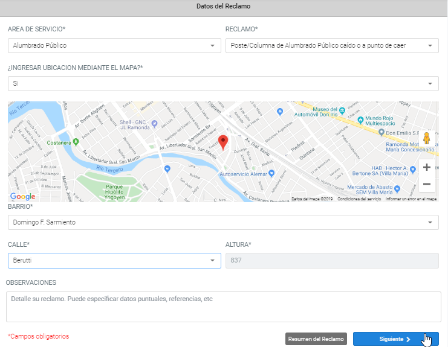
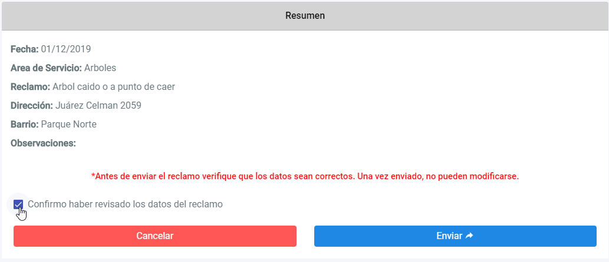

Note que tiene 2 formas de ingresar la ubicación del reclamo: mediante el mapa de Google o manualmente.
- Mediante el mapa de Google: 1. En primer lugar, buscar en el mapa la ubicación exacta del lugar donde desea realizar el reclamo.
2. En segundo lugar, hacer click en el marcador () y arrastrarlo a la ubicación que realizó anteriormente.
3. Listo, ya tiene la ubicación de su reclamo.

- Manualmente: 1. Debe seleccionar barrio y calle correspondiente e ingresar la altura en la que se encuentra el reclamo a realizar.

2) Presionando el botón "Siguiente" se le mostrará un resumen con los datos del reclamo y una estimación de tiempo en que será abordado y solucionado:

3) Antes de enviar el reclamo, corrobore los datos y tilde el casillero "Confirmo haber revisado los datos del reclamo" y presione "Enviar". El reclamo se registrará y le aparecerá en pantalla un mensaje con el código del mismo, para su posterior consulta:
Una vez enviado el reclamo, se le envía un correo electrónico con el código del mismo para su resguardo, como aparece el mensaje en pantalla.
*IMPORTANTE: tenga en cuenta siempre corroborar los datos antes de ser enviado, ya que no puede modificarse una vez registrado.